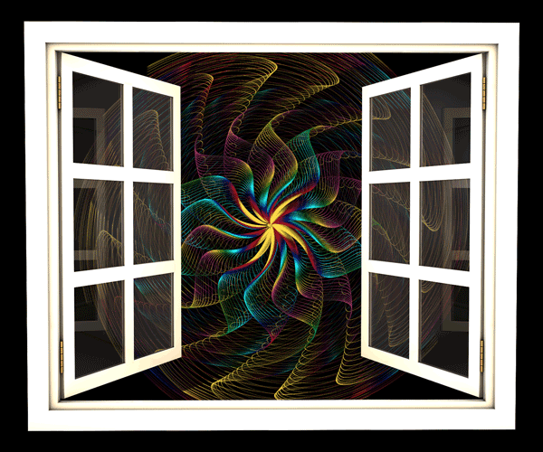

Hello. My name is Queena Situ, and this is my portfolio site.
I am an emerging self-motivated artist who is currently a student at San Jose State Univeristy. I am primarily an illustrator, but I also like working with various digital media.
Contact me if you have any questions!
___________
About
Contact
Artist Statement

"There is strength in vulnerability, solidarity in transparency, and power in truth because it can't be anything but."
I find digital technology to be the most interesting because we are given so many tools to work with and a lot of opportunities that we did not have before. Things such as replication/ duplication, instant data transfers and sharing, cloud storage, data visualization, image manipulation, sound manipulation, animation, artificial intelligence, etc. are all that technology enables us to do, and as a result, gives us an abundance of tools to create with. This is the reason why I prefer to work with digital media.
I am drawn to the human psyche and trying to figure out why we do the things we do and why we think the way we think. More specifically, I am interested in exploring the sense of self and individuality through the various worlds that we move through in our daily lives, such as the digital, physical or tangible, and mental or imaginative world. Since the emergence of the digital world through the use of the internet, we now have a third world where a different self exists.
The questions I tend to ask are how do each of us exist within each of these worlds; is there a preference to existing in one world versus the others; in which world do we feel the safest or most in danger; where does our true self exist; how are all of these worlds connected, and as a result, how does each piece of ourselves from each world create the whole person? In particular, I am interested in how one might impress themselves into characters from all types of media - books, music, movies, games, etc. - and being able to immerse themselves in the different worlds that provide relatable characters put in situations that the viewer might identify with.
Most of these works are for building skill so they might not be contextually interesting. While the work I might do in my university courses might not relate to specifically these topics, I hope that you will still enjoy the work that I make.
Thank you for taking the time to view my work!